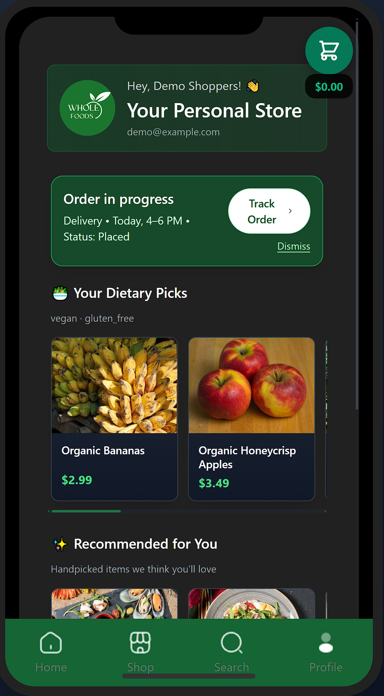
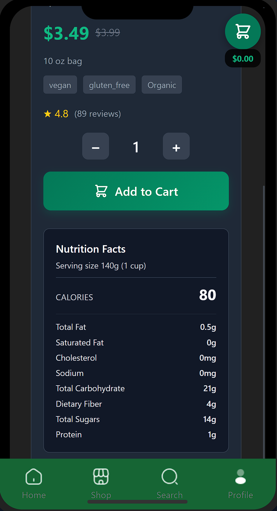
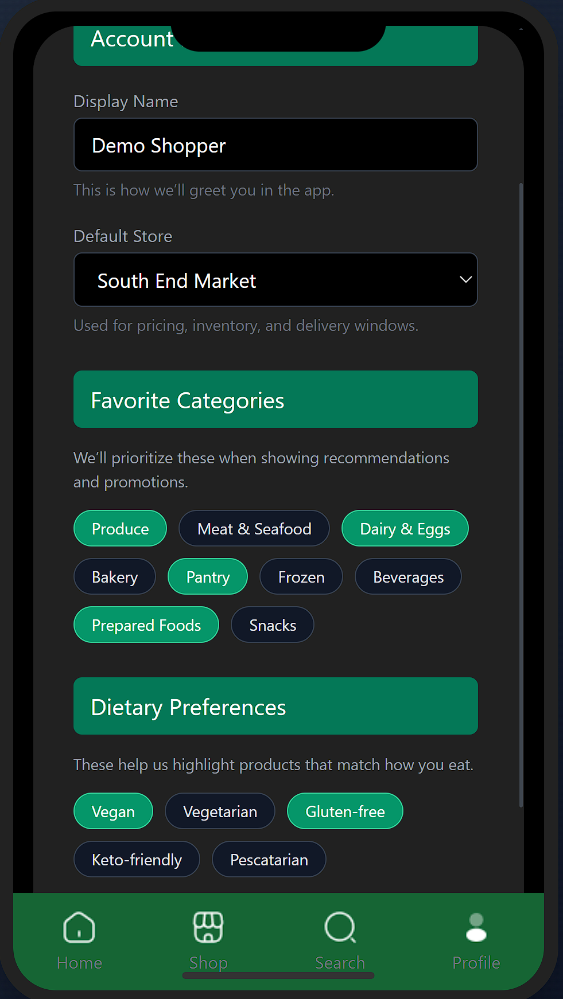

Whole Foods Mobile Experience
Mobile web · UX, data modeling & order tracking
Our team designed and built a mobile-first grocery shopping experience modeled after Whole Foods: onboarding, product discovery, cart, and a Supabase-backed order history and tracking flow layered on top of a custom JSON-driven DataAPI.
Live Prototype
We built the project as a small mobile web app that runs entirely in the browser. The core browsing and product views are powered by a JSON-based DataAPI, and we layered in Supabase so people can log in, place orders, and later see those orders show up in their profile.
Demo Login
Use this test account to walk through the full flow the way we intended it:
- Email: demo@example.com
- Password: password123
This account is wired into Supabase so you can see a realistic flow for login, updating preferences, placing orders, and checking your order history and tracking status.
Your Contributions
I worked as a team lead on this project, but everything here is the result of a group effort. Together we moved from rough flows and disconnected screens to an app that actually feels like something you could use on your phone. On my end, I focused on the data layer, front-end structure, and making sure the pieces our team built fit together cleanly.
What we shipped together:
- Onboarding → login → sign-up flow inside a shared mobile shell.
- Shop and category browsing powered by a JSON catalog through a reusable DataAPI.
- Product detail pages with price, unit, tags, dietary info, and nutrition pulled from JSON.
- Cart screen with editable quantities, line-item totals, and a simple summary panel.
- A preferences page and profile area tied to authenticated users, including order history tiles that pull in real orders from Supabase.
- Order placement and tracking flow: orders saved under each user’s ID and surfaced in a horizontally scrollable history carousel.
- Shared CSS improvements in Sprint 3 (fixing clipping, smoothing scrolling, and tightening the color system so the app felt consistent across screens).
Your Journey
From rough prototype to connected product
At the start, our app was basically a collection of static pages and a small JSON catalog. It definitely felt rough, but that stage helped us nail down the user flow without getting too hung up on implementation details. We could quickly sketch how someone would move from onboarding into browsing, picking items, and checking out.
As we moved into later sprints, we introduced a mock DataAPI to keep all of our product, category, and store data in one place. From there, the focus shifted to wiring everything together—reusing the same data methods across screens, layering in a Supabase-backed order model, and cleaning up transitions so the experience felt like one app instead of a bunch of separate pages.
Phased Development
- Sprint 1 – Core Flows & IA: As a team, we defined the core journey (onboarding → browse → product → cart → review), mapped out entities like products, users, and orders, and built our first round of static HTML/CSS screens so everyone could see the experience end-to-end.
- Sprint 2 – DataAPI & Prototype Integration: We pulled our JSON data into a shared DataAPI and hooked it up to the shop, category, search, and product screens. This was the moment the app started to feel connected instead of like six different prototypes. We also ran quick hallway tests to surface navigation issues and missing content.
- Sprint 3 – Supabase, Orders & Polish: In the final sprint, we focused on “making it real”: wiring Supabase into login and orders, saving orders by user ID, surfacing them in profile as history/tracking, and fixing bugs, layout glitches, and scrolling behavior together so the app was stable enough to demo live.
Key Flows
- Onboarding & Access: Clear entry into login, sign-up, or continue as guest.
- Browse & Search: Category chips and search UI that both hit the same JSON product data.
- Product Detail: Rich cards with price, unit, tags, dietary flags, and nutrition information.
- Cart & Review: Editable cart with quantities, line-item prices, and a simple order summary.
- Profile & Preferences: User profile tied to Supabase auth, with a preferences screen.
- Order History & Tracking: Orders stored per user and presented as a scrollable history, with basic tracking states to show progress after checkout.
Visuals & Code



The final UI is close to what we planned in Figma, but it definitely evolved in Sprint 3 after we saw things running on an actual phone. We adjusted spacing, fixed clipping and scroll issues, and kept the palette calm and neutral so all of the details (prices, units, tags, status) stayed easy to scan on a small screen.
Representative code snippet (DataAPI + orders):
// Load catalog data on app start
await DataAPI.loadEverything();
// Category view
const produceItems = DataAPI.getProductsByCategory(1);
// Search view
const searchResults = DataAPI.searchProducts('coffee');
// Pricing helper
const firstResult = searchResults[0];
const effectivePrice = DataAPI.getEffectivePrice(firstResult);
// Supabase-backed order fetch (conceptual)
const { data: orders } = await supabase
.from('orders')
.select('*')
.eq('user_id', user.id)
.order('created_at', { ascending: false });This setup is pretty close to how a production app might run: JSON and the DataAPI keep the catalog simple and fast, while Supabase takes care of anything that needs to be tied to a specific person or change over time—like accounts, orders, and preferences.
Implementation Details
Under the hood, the experience is backed by a set of JSON files for the product catalog and a Supabase backend for user-specific data. The DataAPI wrapper handles loading the static content and exposes helpers so each screen can stay focused on layout and interaction, while Supabase stores persistent state like accounts and orders:
- products.json – base catalog with categories, prices, tags, and nutrition.
- categories.json – maps category IDs used across shop, search, and product pages.
- stores.json – store IDs, names, and basic location data.
- inventory.json – stock levels per store and product ID.
- delivery_slots.json – mock pickup and delivery time windows.
- promotions.json – discounts and featured banners.
- users.json – seed data used for the front-end prototype.
- Supabase tables – real users, orders, and order line items linked by user ID.
By the end of Sprint 3, all of these pieces were working together: a shared DataAPI for the catalog, a Supabase-backed order system for more realistic flows, and a mobile-first UI that our team felt confident demoing as part of my portfolio.